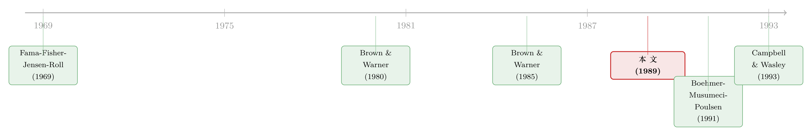

把收益拆成名次：一把不信「正态」的事件研究尺子
本文读的是 Corrado (1989, Journal of Financial Economics)：当日收益率根本不服从正态分布时，事件研究里那把人人都用的参数 t 检验就会「失准」。作者提出一个极简的替代方案——把每只股票自己的异常收益换成名次（rank）再来检验，用一场 CRSP 模拟证明：这把「秩检验」尺子在原假设下刻度更准、在备择假设下还更灵敏。
1 一个被默认了二十年的假设
事件研究（event study）大概是金融实证里被用得最熟、也最不假思索的一套工具。公司宣布并购、增发、拆股、盈余超预期——我们想知道这条消息「值多少钱」，于是把事件日前后的股价异常收益（abnormal return）算出来，再做一个 t 检验，看那根 t 值有没有越过 1.96。越过了，就写下「显著为正」；没越过，就写「不显著」。一套流程行云流水，以至于很少有人停下来问一句：这根 t 值，凭什么可信？
t 检验之所以成立，靠的是一个分布假设：异常收益近似服从正态分布。可问题恰恰出在这里。任何摸过日频数据的人都知道，日收益率不是正态的——它尖峰厚尾（leptokurtic）、还略带偏斜。一只股票今天可能纹丝不动，明天却因为一条传闻跳了 8%。把这样一串「胖尾巴」的数扔进一个为正态分布量身定做的检验里，会发生什么？
这就是 Corrado 在 1989 年这篇短文里要正面回答的问题。它只有十来页，没有华丽的模型，却在事件研究方法论里留下了一把至今仍在用的尺子——后来大家干脆叫它 Corrado 秩检验（Corrado rank test）。
2 先看清楚我们原来在用的是什么
要讲清楚新尺子好在哪，得先把旧尺子摆出来。
设第 \(i\) 只证券在第 \(t\) 天的异常收益为 \(A_{it}\)（通常由市场模型残差得到）。标准做法——也就是 Brown and Warner (1985) 系统检验过的那一套——是先把事件日的横截面平均异常收益算出来：
$$\bar{A}_t = \frac{1}{N}\sum_{i=1}^{N} A_{it}$$
然后用估计窗口里这条平均序列的波动，去估计它的标准差：
$$\hat{S}(\bar{A}) = \sqrt{\frac{1}{D-1}\sum_{t \in \text{est}}\left(\bar{A}_t - \bar{\bar{A}}\right)^2}$$
最后构造检验事件日（记为 \(t=0\)）的统计量：
$$t = \frac{\bar{A}_0}{\hat{S}(\bar{A})}$$
逻辑很干净：如果事件没有带来任何异常表现，\(\bar{A}_0\) 就只是一个普通的日子，落在它平时的波动范围内；只有当 \(\bar{A}_0\) 远远偏离零、超出 \(\hat{S}\) 描述的「正常波动」时，我们才拒绝原假设。
但这整套推断的「合法性」，押在 \(\bar{A}_0/\hat{S}\) 近似服从 \(t\)（或标准正态）分布上。而这一步，需要 \(A_{it}\) 本身不太偏离正态。当单只股票的异常收益厚尾、且样本里证券数 \(N\) 不够大时，横截面平均虽然靠中心极限定理「往正态靠」，却靠得不够快、不够稳——尤其当事件本身还会临时放大方差时（event-induced variance），分母 \(\hat{S}\) 是用事件前的平静期估的，会系统性地低估事件日的真实波动，于是 t 值被人为地吹大，假阳性（false rejection）就来了。
接着，一个自然的问题是：既然麻烦全出在「假设了一个错误的分布」，那我们能不能干脆不假设任何分布？
3 真正关键的一步：把收益换成名次
Corrado 的答案，朴素到近乎狡黠：别再盯着异常收益的数值，去看它的名次。
具体来说，把每只证券在「估计窗口 + 事件窗口」合起来的 \(T\) 天里的异常收益，按从小到大排个序，给每一天一个名次 \(K_{it} \in \{1, 2, \dots, T\}\)。事件日那天的异常收益，如果排在自己历史里特别靠前（名次很大），那就是一个证据；如果只是中游，那就没什么。
这一步的妙处在于：名次的分布是已知的、与收益的具体分布无关的。 不管这只股票的收益是厚尾、偏斜还是别的什么牛鬼蛇神，只要原假设成立（事件日和其他任何一天没有区别），它的名次就在 \(1\) 到 \(T\) 之间均匀分布，期望值恒为
$$E(K_{it}) = \frac{T+1}{2}$$
这是非参数统计的「免费午餐」：用顺序信息换掉了分布假设。于是 Corrado 把事件日的平均名次偏离，除以它在整个窗口上的时间序列标准差，得到秩检验统计量：
其中分母正是把上面那个分子，对窗口里每一天都算一遍，再求其离散程度：
$$S(K) = \sqrt{\frac{1}{T}\sum_{t=1}^{T}\left[\frac{1}{N}\sum_{i=1}^{N}\left(K_{it} - \frac{T+1}{2}\right)\right]^2}$$
直觉上，这个统计量在问一个特别干净的问题：「事件日的平均名次偏离，比起其它普通日子的平均名次偏离，是不是大得反常？」 因为分子和分母都用同一套名次、同一个窗口算出来，分母里也吸收了事件日附近可能出现的额外波动——这正是它对「事件诱发的方差膨胀」天然更稳健的原因。在大样本下，\(T_{rank}\) 近似服从标准正态分布，于是依然可以用我们熟悉的 1.96 去判读。
值得一提的是它对缺失值的处理：当某只证券某天没有交易、收益缺失时，可以把名次标准化成 \(U_{it} = K_{it}/(L_i+1)\)（\(L_i\) 为该证券非缺失的天数），期望值变成 $1/2$，从而让长度不一的序列也能放进同一个统计量里。这种「先排名、再标准化」的小技巧，后来被反复沿用。
4 于是反转出现：模拟里见真章
光有漂亮的理论还不够。一个统计量好不好，最终要回答两个问题：原假设下它会不会乱拒（specification / size）？备择假设下它够不够灵（power）？ Corrado 用一场 CRSP 模拟，把秩检验和参数 t 检验、以及更老的符号检验（sign test）拉到同一条起跑线上。
实验设计的精髓在于「人造真相」：他从 CRSP 日收益数据里反复抽取若干只证券，给每只随机指派一个并不对应任何真实消息的「假事件日」，然后在事件日上人为加进一笔已知大小的异常收益——从 \(0\%\)（即原假设为真）、\(0.5\%\)、\(1\%\) 一直加到 \(2\%\) 上下。因为「真相」是研究者亲手设定的，所以每种检验拒绝原假设的频率，就能被直接读成两个东西：在 \(0\%\) 那一栏读出的是犯第一类错误的概率，在正异常收益那几栏读出的是检验功效。
结论是清晰的：
- 原假设下（诱导异常收益 = 0%），秩检验的经验拒绝率紧贴名义显著性水平（5% 就在 5% 附近），刻度很准；而参数 t 检验在收益非正态、样本里又混入了事件日聚集（clustering）的情形下，会出现偏离名义水平的设定误差。
- 备择假设下，随着诱导异常收益从 \(0.5\%\) 升到 \(1\%\)、\(2\%\)，两种检验的功效都在上升，但秩检验在每一个水平上都系统性地更灵——在那些最常见、最微弱的异常收益区间（约 \(0.5\%\sim1\%\)），秩检验已经能高概率地把信号拎出来，而 t 检验还在迟疑。换句话说，对同一笔真实存在的异常表现，秩检验更不容易「漏判」。
一句话：这把新尺子，既没有把不存在的东西量出来，又能把存在的微弱信号量得更准。 对一门靠「显著性」吃饭的实证方法论来说，这几乎是最理想的组合。
5 文献脉络
把这把尺子放回它所在的谱系里，故事会更有味道。
事件研究的方法学源头，要追到 Fama, Fisher, Jensen and Roll (1969)——那篇用股票拆分研究价格如何吸收信息的开山之作，第一次系统地把「异常收益」当成测量信息的尺子。此后二十年，这套方法被广泛使用，却也一直缺一次严肃的「体检」。
真正把检验统计量本身放上手术台的，是 Brown and Warner (1980, 1985)。他们用模拟回答了一个朴素却要命的问题：我们天天在用的这些 t 检验，到底靠不靠谱？他们的结论偏乐观——在日频数据下，简单的参数检验「大体够用」——但也诚实地点出了软肋：非正态、方差估计、事件日聚集，都会让推断打折扣。

Corrado (1989) 正是接着这根软肋往下走的：既然问题出在分布假设，那就釜底抽薪，换一把非参数的尺子。而它的影响并未止步于此。后来 Campbell and Wasley (1993) 把秩检验搬到了做市商主导、收益更「脏」的 NASDAQ 市场上，发现参数检验在那里制造的假阳性更触目惊心，而秩检验依旧稳健（这条线索，可参见《纳斯达克的收益里藏着「假阳性」——一篇给事件研究挑尺子的论文》）。几乎同时，Boehmer, Musumeci and Poulsen (1991) 从另一个角度——「事件本身把方差吹大了」——给参数检验补了一刀（见《你的 t 值在撒谎：当事件本身把方差吹大了》）。这两条线和 Corrado 的秩检验，共同构成了 1990 年代初事件研究「方法自省」的高潮。
更晚近的讨论，则把战火烧到了横截面推断的层面——当事件在公司之间不是独立发生时，哪怕单点检验再干净，跨公司的相关也会让整体推断失真（参见《事件研究里的「假阳性」：当一根 t 值不再等于因果》）。从这个角度看，Corrado (1989) 是「让单点检验更稳」这条路上一块绕不开的基石。
6 评论与延伸（Q&A + 研究方向）
(a) 几个可能的疑问
Q：秩检验和老掉牙的符号检验（sign test）到底差在哪？
符号检验只用了异常收益的正负号，丢掉了幅度信息——一笔 +0.1% 和一笔 +5% 在它眼里一样，都只是「一个正号」。秩检验用的是名次，保留了「排第几」的序信息，因此对幅度敏感得多，功效自然更高。可以说秩检验是介于「只看符号」和「直接看数值」之间的一个甜点：既不像符号检验那样浪费信息，又不像参数检验那样押注分布。
Q：换成名次，难道不会把信息丢光、反而更不灵吗？
直觉上会担心，但模拟给了相反的答案。原因在于：参数 t 检验那点「额外信息」（用了精确数值）是有代价的——它必须假设这些数值服从正态，一旦假设错了，多出来的精度反而变成了偏差。秩检验放弃了对数值的执念，换来的是分布无关的稳健性。在厚尾的真实日收益里，这笔交易是划算的：损失的那点理论效率，远小于避免设定误差带来的好处。
Q：分母 S(K) 用整个窗口算，凭什么说它对「事件诱发方差」更稳健？
这正是巧思所在。参数检验的分母是用事件前的平静期估的，因此完全看不到事件日那天波动的临时放大，于是低估了分母、放大了 t 值。而秩检验的分母 \(S(K)\) 由窗口里每一天的平均名次偏离算出，事件日那天若真的波动异常，它的名次行为也会被纳入这把尺子——分母里就「认得」这种波动。它不能完全消除问题，但比起对事件日波动一无所知的参数分母，刻度要诚实得多。
Q：原假设下「刻度准」很重要吗，功效高不就行了？
太重要了，甚至比功效更重要。一个会乱拒的检验（size 失控）等于在系统性地制造假阳性——你以为发现了显著的市场反应，其实只是尺子本身歪了。实证文献里大量「显著」结论的可信度，正取决于检验在原假设下守不守规矩。Corrado 的卖点恰恰是：先把刻度做准，再谈灵敏。
Q：这套方法在今天还有用吗，毕竟数据和算力都不可同日而语了？
依然有用，尤其在样本量小、收益分布更「脏」的场景：单只或少数证券的事件、流动性差的资产（小盘股、公司债、新兴市场）、以及任何怀疑事件会放大方差的设定里。当 \(N\) 很大、收益接近正态时，参数检验和秩检验会趋于一致；但金融里真正难办的，恰恰是那些「样本不大、尾巴很厚」的角落。
Q：它能直接用来检验累计异常收益（CAR）吗？
原始形式针对的是单个事件日。要检验多日窗口的累计效应，需要把名次在窗口内做适当的加总并相应调整方差，这正是后续文献（如标准化秩检验的版本）要补的功课。直接把单日统计量套到多日上，会因为日间相关而失真——这是使用时的一个常见坑。
(b) 几个可能的研究问题与提案
1. 把秩检验搬进公司债事件研究
【经济故事】公司债日收益比股票更厚尾、更不连续，且常有大段不交易导致的零收益和陈旧价格（stale prices）。这正是参数检验最容易失灵、而秩检验最该发光的地方。评级调整、契约违约、纳入/剔除央行合格抵押品清单等事件，都需要一把稳健的尺子。 【可行性】高。数据用 TRACE 成交价构造日度或周度异常收益，参照 Campbell-Wasley 的框架做一场「债券版」模拟，比较秩检验与参数检验的 size 与 power。挑战在于缺失值与流动性调整，但 Corrado 的标准化名次 \(U_{it}=K_{it}/(L_i+1)\) 恰好是为缺失值设计的，天然契合。
2. 外资持有人公告事件里的非参数推断
【经济故事】外资进出、被纳入可投资指数（investability）等事件，往往样本不大、跨国收益分布差异极大，参数检验的跨市场可比性存疑。秩检验的分布无关性，让「把不同市场的事件放进同一个检验」变得更名正言顺。 【可行性】中。需要拼接跨国日收益与外资持仓变动数据（如 FTSE/MSCI 重新分类的事件），识别上要小心事件聚集（同一次指数调整会同时命中很多股票），这会引入横截面相关，需结合「过去即序章」那条线索做联合校正。
3. 事件诱发方差下，秩检验 vs. BMP 检验的功效赛马
【经济故事】Corrado (1989) 与 Boehmer-Musumeci-Poulsen (1991) 是同一时期、针对同一软肋的两条不同药方：前者换分布假设，后者直接用横截面方差校正。但它们从未在一个统一的、带有真实方差膨胀的模拟环境里被系统地正面比较过。 【可行性】高。纯模拟研究，doable。设计一个能精确控制「方差膨胀幅度」和「收益厚尾程度」两个旋钮的数据生成过程，画出二者的 size-power 前沿，看在什么参数区域谁更优。结论对实证工作者的「选尺子」决策有直接指导意义。
4. 高频事件研究里的秩检验
【经济故事】把事件窗口缩到分钟甚至秒级（如 FOMC 声明、盈余电话会逐句对齐），日频的正态近似彻底崩溃，跳跃和微观结构噪声主导一切。非参数的名次方法在这里也许是少数仍然「刻度可信」的选项。 【可行性】中。需要高频成交/报价数据与精确到秒的事件时间戳；难点在于日内的强烈季节性（开盘、收盘的波动模式）会污染名次的均匀分布假设，需先对日内模式去季节化，否则名次本身就有偏。
7 我的判断
贡献。这篇论文的价值不在数学的深度，而在「问对了问题」并给出一个简单到可以立刻投入使用的答案。它把事件研究的方法论从「默认正态」推进到「不必假设分布」，而代价几乎为零——任何会算名次的人都能实现它。三十多年后它仍被广泛引用、被打包进各种事件研究工具箱，本身就是最好的背书。
对识别（这里是「检验设定」）的担忧。我会提醒三点：其一，模拟结论依赖于具体的数据生成过程，外推到分布形态差异很大的资产（如极度厚尾的加密资产）时，需要重新校验；其二，原始统计量是为单个事件日设计的，搬到多日 CAR 时若不正确处理日间相关，稳健性会打折；其三，秩检验解决的是「单点检验的设定」，并不自动免疫横截面事件聚集带来的整体推断偏差——这是另一个层面的问题，后来的文献才补上。
后续想看到的。我最想看到的，是把这把尺子和它的「同辈对手」（BMP 方差校正、标准化秩、自助法 bootstrap）放进一个统一、透明、可复现的赛马场里，按「资产类别 × 厚尾程度 × 方差膨胀 × 样本量」切成网格，画出各自的 size-power 地图。事件研究做了半个多世纪，我们其实仍缺一张「在什么场景该用哪把尺子」的清晰指南——而 Corrado (1989) 正是这张地图上必须标注的一个坐标。
参考文献
Brown, S. J., and J. B. Warner (1980). Measuring security price performance. Journal of Financial Economics 8(3), 205–258.
Brown, S. J., and J. B. Warner (1985). Using daily stock returns: The case of event studies. Journal of Financial Economics 14(1), 3–31.
Corrado, C. J. (1989). A nonparametric test for abnormal security-price performance in event studies. Journal of Financial Economics 23(2), 385–395.
Campbell, C. J., and C. E. Wasley (1993). Measuring security price performance using daily NASDAQ returns. Journal of Financial Economics 33(1), 73–92.
Boehmer, E., J. Musumeci, and A. B. Poulsen (1991). Event-study methodology under conditions of event-induced variance. Journal of Financial Economics 30(2), 253–272.
Fama, E. F., L. Fisher, M. C. Jensen, and R. Roll (1969). The adjustment of stock prices to new information. International Economic Review 10(1), 1–21.